Estrich reparieren
Risse, Hohllagen und Ausbrüche werden geprüft und fachgerecht instand gesetzt, bevor unnötig alles entfernt wird.
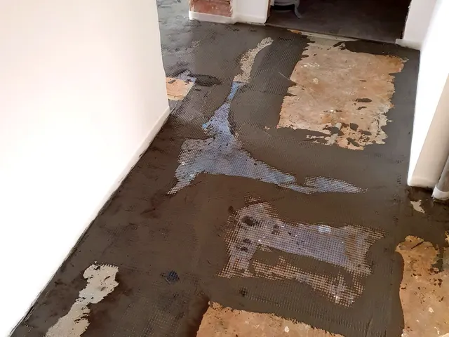
Lothar Meiskeüber 40 Jahre ErfahrungWermelskirchen & Bergisches Land
Von der defekten Estrich-Ecke bis zum fertigen Boden: ehrlich beraten, sauber vorbereitet und präzise verlegt.
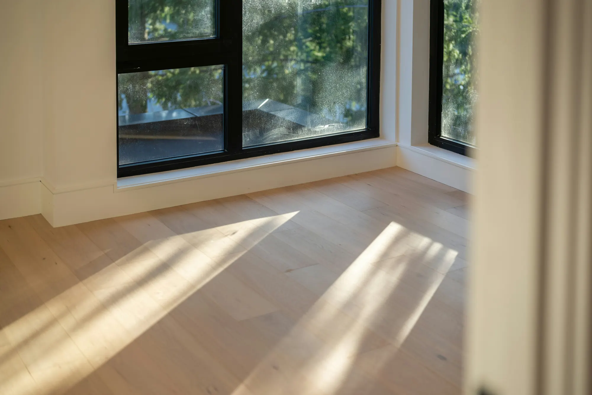
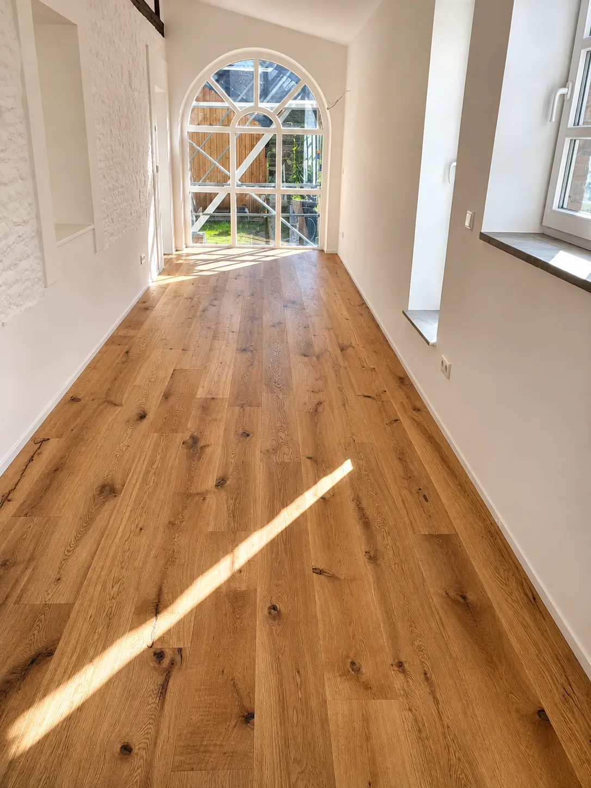
„Ein guter Boden beginnt nicht mit dem Belag. Er beginnt mit einem Untergrund, auf den man sich verlassen kann.
Belagpräzise verlegt
Spachtelmasseeben und tragfähig
Estrichgeprüft und instand gesetzt
Eine Auswahl ausgeführter Arbeiten – vom vorbereiteten Untergrund bis zum fertigen Raum.
Risse, Hohllagen und Ausbrüche werden geprüft und fachgerecht instand gesetzt, bevor unnötig alles entfernt wird.

Schleifen, grundieren, spachteln und Ebenheit herstellen – damit der neue Belag dauerhaft sicher liegt.
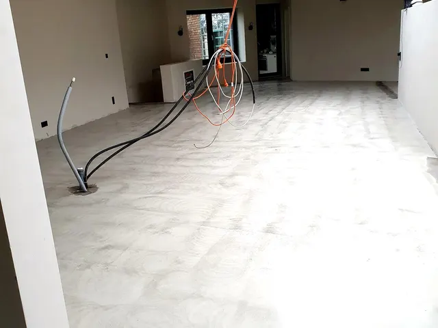
Designbelag, Vinyl, Teppichboden, Laminat, PVC und Parkett – auch auf Treppenstufen und Podesten, sauber und passgenau.
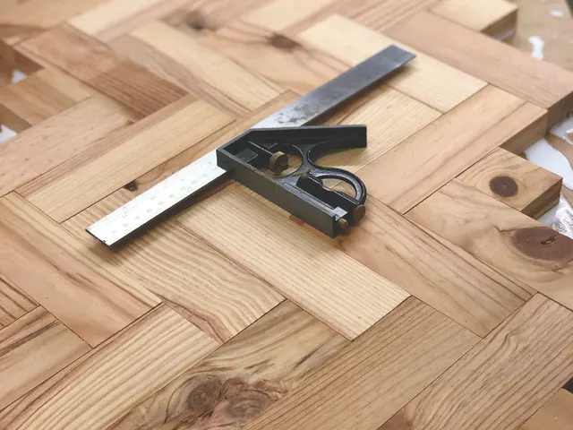
Auch einzeln möglich: nur den Untergrund vorbereiten, wenn Sie Ihren Boden selbst verlegen möchten – oder bereits gekauftes Material verlegen lassen. Mehr in den Fragen
Welcher Belag passt, klären wir gemeinsam – nach Raum, Beanspruchung, Untergrund und Budget.
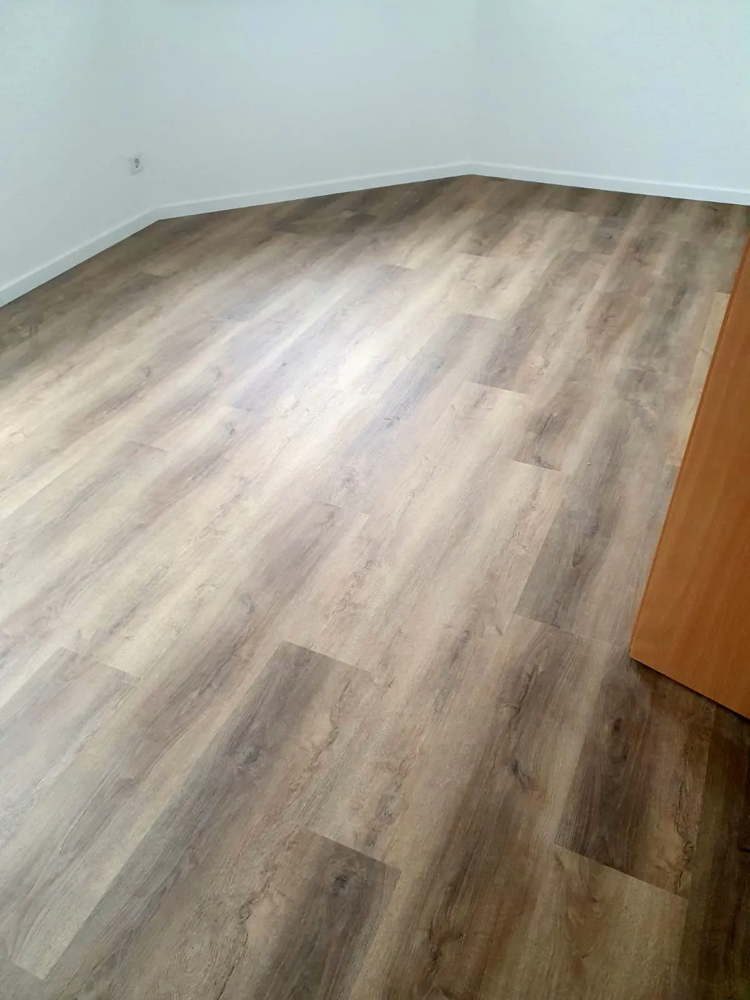
Pflegeleicht, robust und in vielen Oberflächen erhältlich. Ideal für Wohnräume, Flure und stark beanspruchte Bereiche.
Material anfragen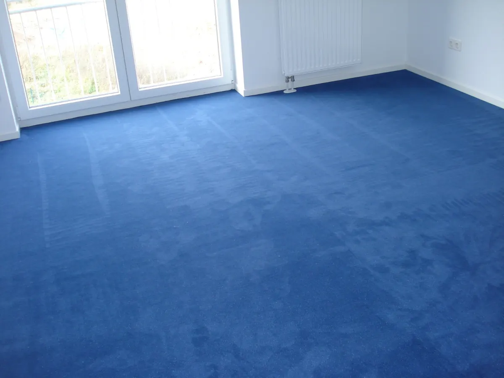
Teppichboden und textile Beläge sind fußwarm, dämpfen den Schall und machen Räume spürbar behaglicher – im Wohnbereich ebenso wie im Büro.
Passende Lösung finden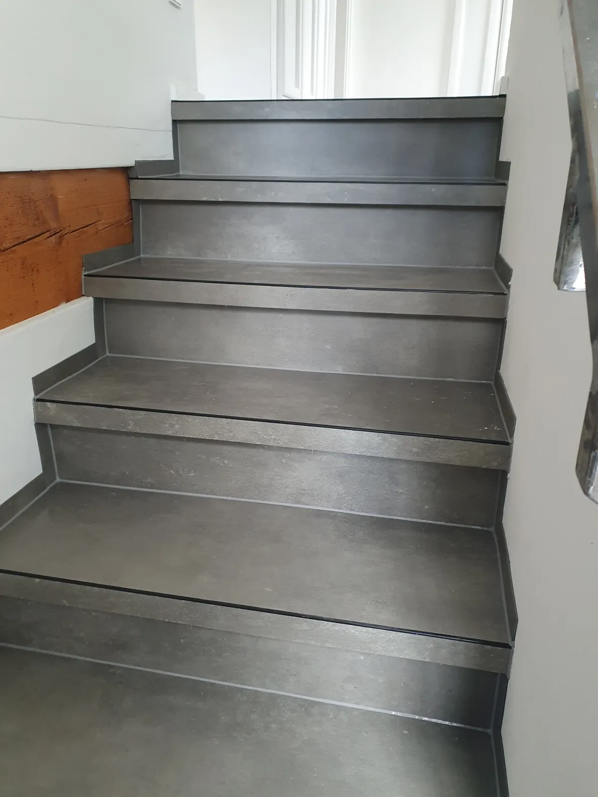
Treppenstufen und Podeste verklebe ich mit textilen Böden oder Materialien zum Nassreinigen – mit Produkten, die eine lange Lebensdauer garantieren.
Treppe besprechen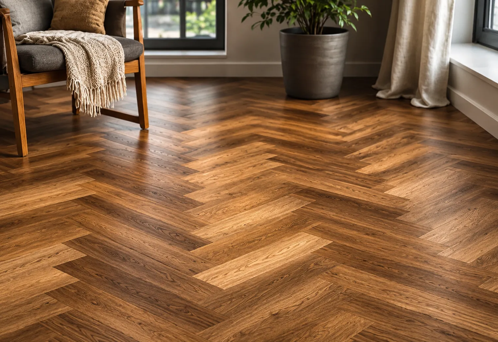
Warm, wertig und langlebig. Parkett bringt Ruhe in den Raum und kann – passend zu Nutzung und Untergrund – vollflächig verklebt oder schwimmend verlegt werden.
Projekt besprechen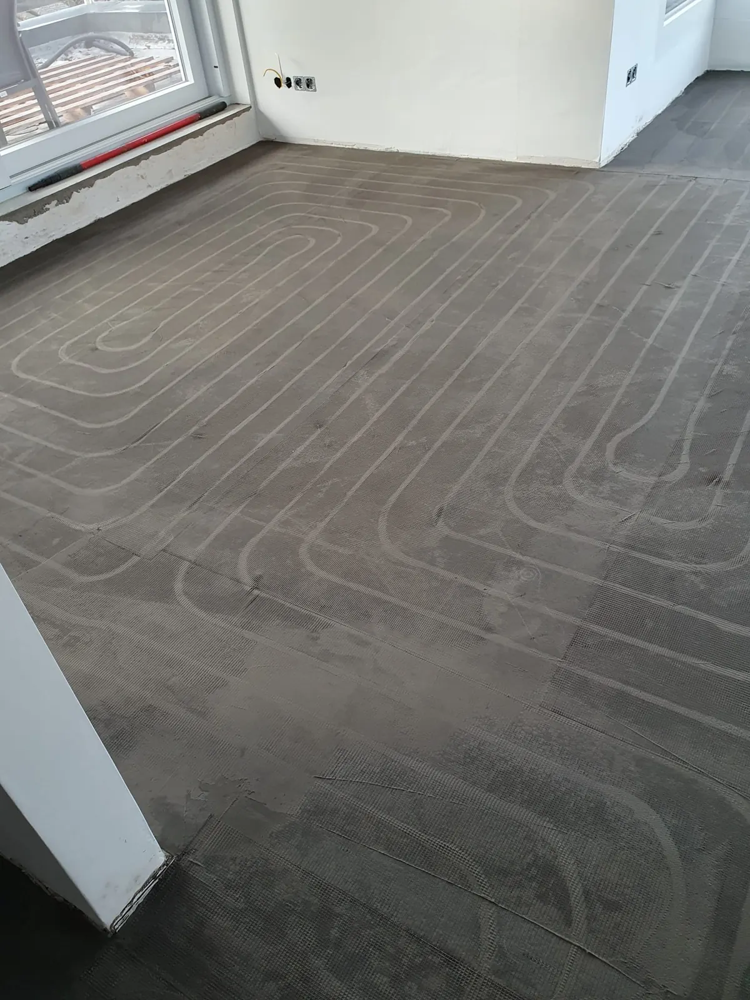
Auf eingefräster Fußbodenheizung oder sich bewegenden Holzdielen: Wenn es mal schwierig wird, erstelle ich Ihnen gerne nur den Untergrund – wenn Sie Ihren Fußboden selbst verlegen möchten.
Untergrund anfragenSie schildern kurz Ihr Vorhaben und wie ich Sie erreiche.
Untergrund, Feuchte, Höhen und Anschlüsse werden geprüft.
Sie erhalten eine nachvollziehbare Aufstellung der Arbeiten.
Verlegung, Abschluss und gemeinsame Abnahme.
Ich verlege Designbeläge und Vinyl, textile Böden und Teppichboden, PVC, Laminat und Parkett – auch auf Treppenstufen und Podesten, mit Produkten, die eine lange Lebensdauer garantieren. Welcher Belag sinnvoll ist, hängt vom Raum, der Beanspruchung, dem Untergrund, der gewünschten Optik und Ihrem Budget ab – deshalb steht vor der Auswahl immer eine ehrliche Beratung.
Ja, denn mit über 40 Jahren Erfahrung und den ausgewählten Produkten von Schönox werden auch bei schwierigsten Voraussetzungen hervorragende Ergebnisse für die Aufnahme der ausgewählten Oberböden erzielt. Ein Boden kann nur so gut sein wie der Untergrund darunter. Ich prüfe Estrich und vorhandene Flächen, repariere schadhafte Stellen und übernehme bei Bedarf Schleifen, Grundieren, Spachteln und das Herstellen einer ebenen, tragfähigen Verlegefläche.
Nein, nicht automatisch. Manche Altbeläge können erhalten, aufgearbeitet oder nach fachlicher Prüfung als geeignete Grundlage genutzt werden. Vor Ort beurteile ich Zustand, Aufbau und Haftung und erkläre Ihnen, welche Lösung technisch sinnvoll und wirtschaftlich vernünftig ist. Besonders das Entfernen des alten Bodenbelags erspart einiges an Kosten: Durch die nicht gewerbliche Entsorgung in Eigenleistung können Sie viel Geld sparen.
Gerne verlege ich Ihnen das vorhandene Material oder stelle Ihnen nur den Untergrund her. Bitte sprechen Sie mich an.
Ja. Ich erläutere Ihnen die Unterschiede bei Pflege, Haltbarkeit, Raumwirkung, Feuchtebeständigkeit und Fußbodenheizung. Dabei empfehle ich nicht das teuerste Material, sondern den Boden, der langfristig zu Ihrem Raum und Ihrem Alltag passt.
Mein Schwerpunkt liegt in Wermelskirchen und im Bergischen Land. Je nach Umfang und Entfernung übernehme ich auch Projekte in den angrenzenden Regionen. Einsatzort und Projektgröße klären wir am besten kurz telefonisch.
Nach einer ersten Abstimmung vereinbaren wir in der Regel einen Termin zum Aufmaß. Dabei prüfe ich Flächen, Übergänge und Untergrund und bespreche die gewünschten Leistungen. Anschließend erhalten Sie ein nachvollziehbares Angebot mit den vorgesehenen Arbeiten und Materialien.
Das hängt von Fläche, Belag und Untergrund ab. Eine reine Verlegung kann oft zügig erfolgen; Reparaturen, Spachtelarbeiten, Trocknungszeiten oder aufwendige Verlegemuster benötigen mehr Zeit. Nach dem Aufmaß kann ich den Ablauf realistisch einschätzen und mit Ihnen abstimmen.
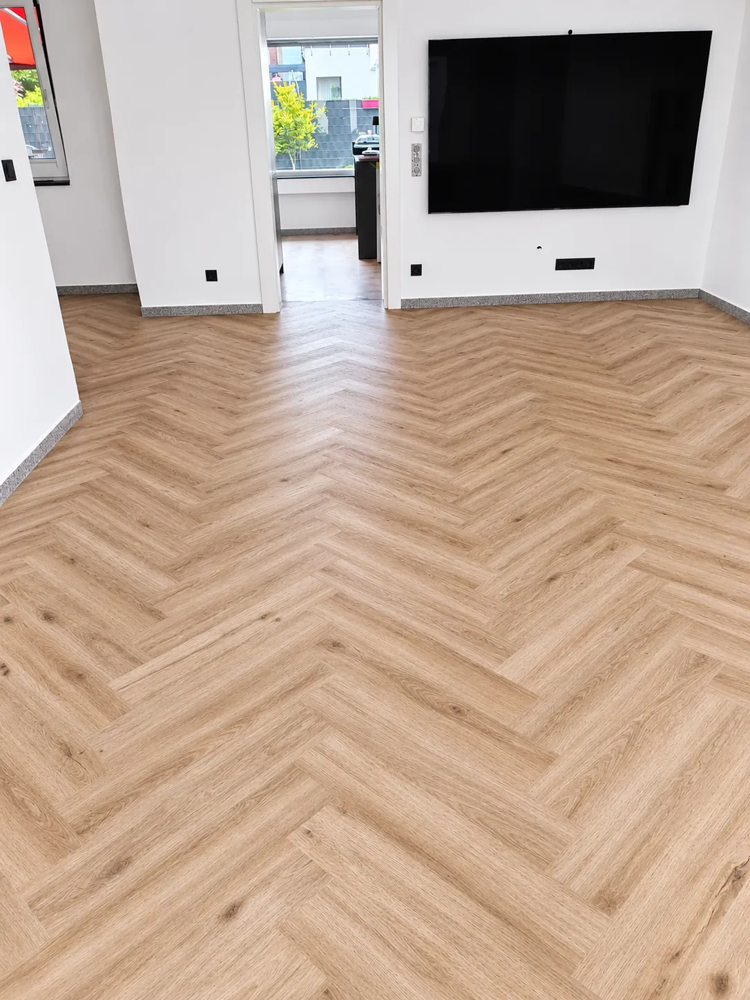
Schicken Sie kurz die wichtigsten Informationen. Alles Weitere klären wir beim Aufmaß vor Ort.